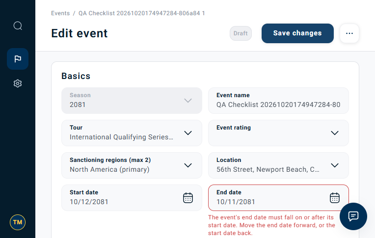

WSL-9695 · New event creation accepts past dates
Dev rerun · 20 Oct 2026, 20:49–20:50 Africa/Cairo · Jira bug · Detailed investigation
Still reproducible on dev. Creating a new event with past start and end dates returned HTTP 201 instead of expected 422. The response contains a new Draft event dated 2026-06-28–2026-06-29. 14 other date-validation checks passed.
| Evidence | Expected | Observed |
|---|---|---|
| POST /api/tour-manager/events | 422 validation error; no event created | 201 Created |
| New event dates | Future dates, per AUTO-DATE-001 | 2026-06-28 / 2026-06-29 |
| Created event | No saved event | 01a15a6f-3b3a-7357-9aff-eac716b965e1Draft · version 1 |
| Run result | All assertions pass | 14 passed / 1 failed |
API evidence — primary proof
The following is the captured response from the failed assertion, not a simulated API response. No independent database read was performed.
Download response.json · Download checks and request-status log
POST https://api.dev.worldsurfleague.com/api/tour-manager/events
HTTP 201
{
"event": {
"id": "01a15a6f-3b3a-7357-9aff-eac716b965e1",
"seasonId": "01a14127-7179-718f-8b17-d7ff6a6f6c7b",
"status": {
"code": "draft",
"label": "Draft",
"tone": "muted"
},
"statusOptions": [
{
"code": "tentative",
"label": "Tentative",
"destructive": false
},
{
"code": "archived",
"label": "Archive",
"destructive": true
}
],
"fields": {
"name": "QA Checklist 20261020174947284-806a84 2",
"tour": "01a14127-5313-7165-a37f-b78a3d1fb5a7",
"rating": "",
"regions": [
"north_america"
],
"location": "01a14127-5441-7536-80b8-67a4d98a13e3",
"startDate": "2026-06-28",
"endDate": "2026-06-29",
"format": "01a14127-53f2-7694-86aa-9034f7fddb51",
"prizeMoney": {
"amount": 12345,
"currency": "USD"
},
"registrationOpensDate": "",
"registrationOpensTime": "",
"registrationClosesDate": "",
"registrationClosesTime": "",
"currency": "",
"entryFee": null
},
"readOnly": false,
"feeFromGrid": true,
"version": 1
}
}Reproduction
- Authenticate as a dev Tour Manager and choose a current season with valid tour, location and format references.
- Create a uniquely named event with ordered start/end dates in the past and within the selected season. Leave registration dates/times blank for Draft.
- Submit directly to
POST /api/tour-manager/events. - Observe HTTP 201 with a new Draft event. Expected: HTTP 422 with field validation.
The runner retries another valid location only on HTTP 409 collision. The response above is the successful create. Exact request payload was not retained; the accepted fields are preserved in response.json.
Recording — supporting browser context
The test first runs API boundary checks, then opens Edit event for a separate reversed-date check. API activity is not visible in the recording; use the response and check log above to verify the past-date defect. The recording does not establish frontend past-date rejection.
Screenshot — separate frontend ordering check

This is a different fixture: end date before start date. Frontend ordering validation passed and blocked the save request. This screenshot is context, not visual proof of the historical event create.
All assertions
| Check | Result |
|---|---|
| Backend rejects event end before event start | PASS |
| Backend identifies reversed event dates | PASS |
| Backend accepts the same event start and end date | PASS |
| Backend accepts same-day registration with ordered different times | PASS |
| Registration opening time persists | PASS |
| Registration closing time persists | PASS |
| Backend rejects equal registration opening and closing times | PASS |
| Backend identifies the equal registration timestamps | PASS |
| Backend rejects registration closing at event start | PASS |
| Backend identifies registration closing at event start | PASS |
| Backend rejects registration opening at event start | PASS |
| Backend identifies registration opening at event start | PASS |
| Backend requires newly-created event dates to be future | FAIL |
| Frontend shows the end-before-start validation | PASS |
| Frontend blocks the invalid reversed-date save request | PASS |
Technical findings
In the inspected local competition-service source, application/events/save.py:create_event passes today to _build_write. That function checks season eligibility, date ordering and season boundaries, but has no future event-date guard before store.insert. This is consistent with the API result; deployed source revision was not verified.
Fix acceptance: enforce the approved future-date rule before persistence, return actionable 422 field errors, align frontend behavior, define today/timezone boundaries, and retain valid historical editing.
Requirement basis: supplied checklist / AUTO-DATE-001. Product should explicitly resolve any intended exception for historical Draft creation. Frontend past-date behavior remains unverified. Original occurrence: 19 Oct, dates 2026-08-20–2026-08-21. Earlier rerun: 20 Oct, dates 2026-07-21–2026-07-22. This page uses the latest rerun with the correct frontend address.